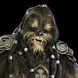
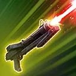
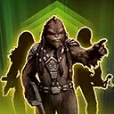
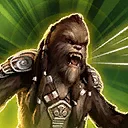

Tarfful
Ferocious Support that provides Defense to his allies and punishes enemies with Provoked

Ferocious Support that provides Defense to his allies and punishes enemies with Provoked

Deal Physical damage to target enemy and dispel all buffs on them. Wookiee allies gain Defense Penetration Up and Defense Up for 1 turn, and Protection Up (10%) for 2 turns.

Wookiee allies gain 25% Defense (stacking) for the rest of the encounter. Call all Wookiee allies to assist and Stun target enemy for 1 turn. Ally Attackers gain Critical Damage Up for 2 turns, ally Healers and Supports gain Speed Up for 2 turns, and ally Tanks Taunt for 2 turns.

Dispel all debuffs on all allies, and they gain 50% Critical Damage for 2 turns. Wookiee allies gain Potency Up and Tenacity Up for 2 turns, and gain 10% Max Health (stacking) for the rest of the encounter. All enemies are inflicted with Provoked for 1 turn, which can't be evaded.
At the start of battle, all Wookiee ally Tanks Taunt for 1 turn. All allies gain 20% Defense and Max Health, doubled for Wookiee allies.
Whenever a Wookiee ally Taunts, all Wookiee allies gain 10% Defense (stacking), for the rest of the encounter.
Whenever Taunt expires, all Wookiees recover 25% Health.
At the start of each allied Wookiee's turn, they gain Offense equal to 200% of their Defense until the end of their turn.
At the start of battle, if there were no Galactic Legend enemies, whenever an allied Wookiee is critically hit, they reflect 50% of the damage dealt back onto the attacker (this damage can't defeat enemies).
Omicron Boost : While in Territory Wars: At the start of battle, all allies gain 25% Defense, Protection Up (50%), and Tenacity Up for 2 turns.
Whenever an allied Wookiee is critically hit, Wookiee allies gain Foresight for 1 turn and +5% Defense (stacking) until the end of the encounter.
Whenever an allied Wookiee gains Retribution, all allies gain Retribution for 2 turns.
The first time each Wookiee ally is defeated, all Wookiee allies have their cooldowns refreshed, and they recover 100% of their Health, and gain 25% Offense (stacking) until the end of the encounter.
Tarfful has +30% Tenacity and +20 Speed. Whenever an ally has a buff dispelled, Tarfful gains 10% Turn Meter.
If there are at least 3 Wookiee allies active at the start of battle:
- If Veteran Smuggler Chewbacca is an ally, Veteran Smuggler Han Solo also gains the effects of Rrrruuuurrr when it is used
- Whenever a Wookiee ally gains Health Up, all allies recover 50% Health and Protection and gain Advantage for 1 turn
- Whenever a Wookiee ally gains Retribution, Wookiee allies inflict Damage Over Time to target enemy for 2 turns when they use a Basic ability, which can't be evaded
- Whenever an enemy attacks out of turn, all allies gain 25 Speed (stacking, max 500) for 1 turn